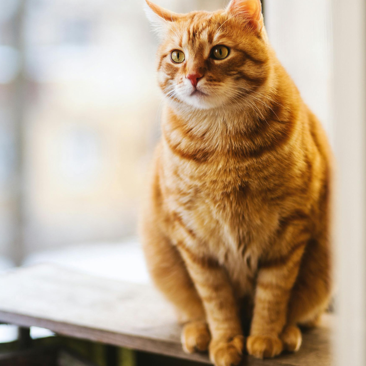

As cat owners, we all want to provide the best care for our furry friends. However, a cat’s dietary needs are quite different from ours. Some foods that are delicious for us can be dangerous, even deadly, for cats. Here are some foods that cats should avoid and the reasons why. This is essential information for new cat owners!
No, cats lack the enzyme to break down lactose, which can lead to digestive issues and diarrhea. Instead, you can offer cat-specific milk, unsweetened yogurt, unsweetened and unflavored kefir, or natural cheese balls to supplement calcium.
Certain vegetables are harmful to cats:
Additionally, these vegetables should be consumed in moderation:
Avoid giving cats the following fruits:
Cooked bones should be avoided as they can splinter and puncture a cat’s esophagus or gastrointestinal tract. You can give frozen poultry necks or wings, which are relatively safe. The high acidity in a cat’s stomach can digest these small bones, but always supervise to ensure they don’t swallow large pieces whole.
Chocolate is also a no-go for cats! The theobromine and caffeine in chocolate can cause severe toxicity in cats.
By understanding and avoiding these harmful foods, we can help our cats lead healthier, longer lives. This guide is crucial for new cat owners to ensure the well-being of their beloved pets.